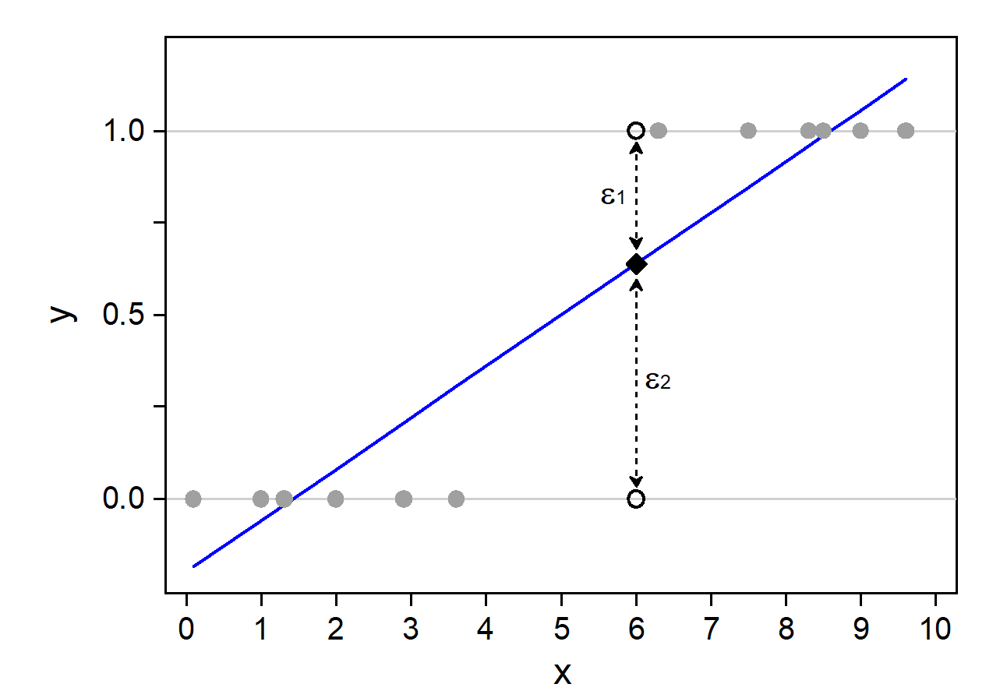
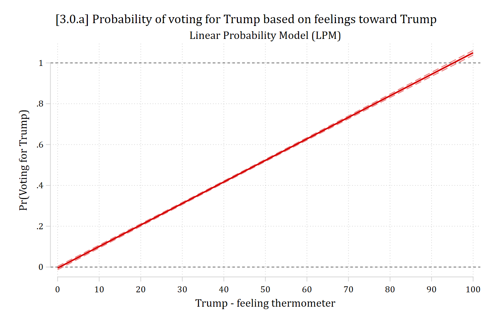
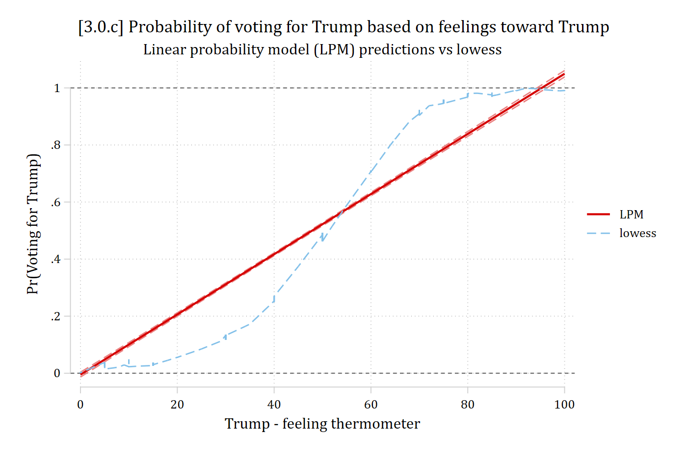
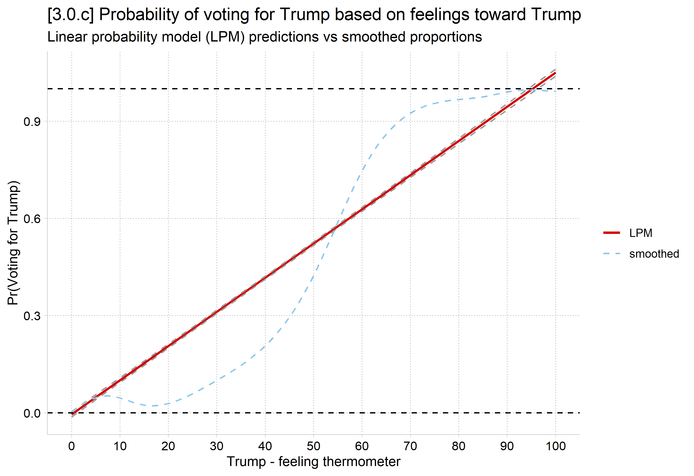

library(haven) # import Stata data and labelslibrary(dplyr) # data manipulationlibrary(ggplot2) # graphslibrary(marginaleffects) # predictions and marginal effectslibrary(cleanplots) # graph schemecleanplots_defaults()anes <-read_dta("https://tdmize.github.io/data/data/cda_anes.dta")# Drop any missing data on the model IVsanes <- anes[complete.cases(anes[c("age", "hhincome", "woman", "lgb", "race4","edyrs", "relimport", "wrongtrack")]), ]# Treat binary/nominal variables as factors using their value labelsanes <- anes |>mutate(woman =as_factor(woman), lgb =as_factor(lgb), race4 =as_factor(race4),relimport =as_factor(relimport), wrongtrack =as_factor(wrongtrack)) |>droplevels()lpm1 <-lm(vote_trump ~ age + hhincome + woman + lgb + race4 + edyrs + relimport + wrongtrack, data = anes)summary(lpm1)
Call:
lm(formula = vote_trump ~ age + hhincome + woman + lgb + race4 +
edyrs + relimport + wrongtrack, data = anes)
Residuals:
Min 1Q Median 3Q Max
-1.12431 -0.24707 -0.07862 0.13783 1.22325
Coefficients:
Estimate Std. Error t value Pr(>|t|)
(Intercept) 1.368e+00 3.298e-02 41.483 < 2e-16 ***
age -5.982e-04 2.777e-04 -2.154 0.0312 *
hhincome -5.835e-05 7.184e-05 -0.812 0.4167
womanWoman -4.863e-02 9.068e-03 -5.364 8.43e-08 ***
lgbLGB -1.287e-01 1.843e-02 -6.982 3.19e-12 ***
race4Black -3.474e-01 1.653e-02 -21.015 < 2e-16 ***
race4Hispanic -1.616e-01 1.629e-02 -9.925 < 2e-16 ***
race4Other -8.941e-02 1.621e-02 -5.515 3.62e-08 ***
edyrs -1.912e-02 1.958e-03 -9.766 < 2e-16 ***
relimport2. Very important -8.496e-02 1.342e-02 -6.332 2.57e-10 ***
relimport3. Moderately important -1.379e-01 1.347e-02 -10.243 < 2e-16 ***
relimport4. A little important -1.835e-01 1.553e-02 -11.816 < 2e-16 ***
relimport5. Not important at all -2.850e-01 1.388e-02 -20.537 < 2e-16 ***
wrongtrackWrong track -5.615e-01 1.079e-02 -52.030 < 2e-16 ***
---
Signif. codes: 0 '***' 0.001 '**' 0.01 '*' 0.05 '.' 0.1 ' ' 1
Residual standard error: 0.3696 on 6843 degrees of freedom
(475 observations deleted due to missingness)
Multiple R-squared: 0.4394, Adjusted R-squared: 0.4383
F-statistic: 412.5 on 13 and 6843 DF, p-value: < 2.2e-16
Interpreting the linear probability model (LPM)
An advantage of the LPM is that the coefficients are in terms of probabilities; they are also additive effects
For binary IVs: Group (coded as 1 on xk) has a βk higher/lower probability of y (=1) than group (coded as 0 on xk)
For continuous IVs: A one unit increase in xk is associated with a βk increase/decrease in the probability of y (=1)
Black voters are about 34.7 percentage points less likely to vote for Trump than White voters
Women are about 4.9 percentage points less likely to vote for Trump
Each additional year of age decreases the probability of voting for Trump by .001
After controlling for other factors, household income is not related to intentions to vote for Trump
Interpretation Tip: Probabilities can be converted to percentage points by multiplying by 100. Note you should not say percent as this is usually used for a multiplicative effect, not a probability
Problems with the linear probability model
Heteroscedastic errors & non-normal errors
Standard errors, and thus p-values and CIs, will be incorrect
Using robust SEs can help
Whether they help enough to entirely fix the problem is unclear
King and Roberts (2015) argue convincingly that “…when misspecification is bad enough to make classical and robust standard errors diverge, assuming that it is nevertheless not so bad as to bias everything else requires considerable optimism. And even if the optimism is warranted, settling for a misspecified model, with or without robust standard errors, will still bias estimators of all but a few quantities of interest.”
In other words, using robust SEs does not “fix” the problem—instead, they are an indicator your model is wrong
Nonsensical predictions
Predictions outside the logical range of your DV
Binary DVs only take on the values of 0 or 1
Predicted probabilities can logically only range from 0 to 1
Measures of model fit (e.g. R2) are not interpretable
More on this later
Models tailor-made for binary DVs usually produce better model fit
Substantively unreasonable functional form
Want a functional form with reasonable nonlinearities built in that constrain predictions to a logical range
Unreasonable functional form often produces spurious interaction effects (Rohrer and Arslan 2021)
Linear probability model—single continuous IV

Nonsensical predictions
According to the linear probability model (LPM)…
A highly-educated black woman has a predicted probability of voting for Trump of -.301
* Make prediction for highly educated black womanmtable, at(woman=1 race4=2 edyrs=20 relimport=5 wrongtrack=1)
Expression: Linear prediction, predict()
xb
--------
-0.301
Specified values of covariates
| woman race4 edyrs relimport wrongtrack
----------+----------------------------------------------------
Current | 1 2 20 5 1
# Make prediction for highly educated black womanavg_predictions(lpm1, newdata =datagrid(woman ="Woman", race4 ="Black", edyrs =20,relimport ="5. Not important at all", wrongtrack ="Wrong track",grid_type ="counterfactual"))
Estimate Std. Error z Pr(>|z|) S 2.5 % 97.5 %
-0.301 0.0216 -14 <0.001 145.1 -0.344 -0.259
Type: response
A unit increase in xk results in a constant change βk in the probability
Substantively effects of feelings about Trump are likely to be diminishing
marginsplot, /// xlab(0(10)100) ytitle("Pr(Voting for Trump)") yline(0 1) /// recastci(rline) ciopt(lpat(dash) color(*.5)) /// plotopt(msym(none) lwid(medthick)) ///title("[3.0.a] Probability of voting for Trump based on feelings toward Trump", size(medium)) ///subtitle("Linear Probability Model (LPM)")
Variables that uniquely identify margins: feel_trump

plot_predictions(lpm2, by ="feel_trump",newdata =datagrid(feel_trump =seq(0, 100, 5), grid_type ="counterfactual")) +geom_hline(yintercept =c(0, 1), linetype ="dashed") +scale_x_continuous(breaks =seq(0, 100, 10)) +labs(title ="[3.0.a] Probability of voting for Trump based on feelings toward Trump",subtitle ="Linear Probability Model (LPM)",x ="Trump - feeling thermometer", y ="Pr(Voting for Trump)")
marginsplot, /// xlab(0(10)100) ytitle("Pr(Voting for Trump)") yline(0 1) /// recastci(rline) ciopt(lpat(dash) color(*.5)) /// plotopt(msym(none) lwid(medthick)) ///title("[3.0.c] Probability of voting for Trump based on feelings toward Trump", size(medium)) ///subtitle("Linear probability model (LPM) predictions vs lowess") ///addplot(connected lowpr feel_trump, sortmsymbol(none) lcol(eltblue)) ///legend(order(2 "LPM" 3 "lowess"))
Variables that uniquely identify margins: feel_trump

lpm_prs <-avg_predictions(lpm2, by ="feel_trump",newdata =datagrid(feel_trump =seq(0, 100, 5), grid_type ="counterfactual"))ggplot(lpm_prs, aes(x = feel_trump, y = estimate)) +geom_line(aes(color ="LPM"), linewidth =1) +geom_line(aes(y = conf.low), linetype ="dashed", color ="gray60") +geom_line(aes(y = conf.high), linetype ="dashed", color ="gray60") +geom_smooth(data = anes, aes(x = feel_trump, y = vote_trump, color ="smoothed"),linetype ="dashed", se =FALSE) +geom_hline(yintercept =c(0, 1), linetype ="dashed") +scale_x_continuous(breaks =seq(0, 100, 10)) +labs(title ="[3.0.c] Probability of voting for Trump based on feelings toward Trump",subtitle ="Linear probability model (LPM) predictions vs smoothed proportions",x ="Trump - feeling thermometer", y ="Pr(Voting for Trump)", color =NULL)

When the LPM diverges from binary logit/probit
Binary logit and probit models can produce (relatively) linear effects
These occur when the predicted probabilities are at middle values in the 0 to 1 continuum
E.g., Pr(voting) across ages is always between 0.4 and 0.6
LPM will diverge more drastically from binary logit/probit when the observed proportion of the DV is closer to 0 or 1 and/or when the conditional probabilities (i.e., conditioning on an IV) are sometimes closer to 0 or 1
Nonlinearities are more pronounced here
LPM and logit/probit also diverge more when you have skewed IVs